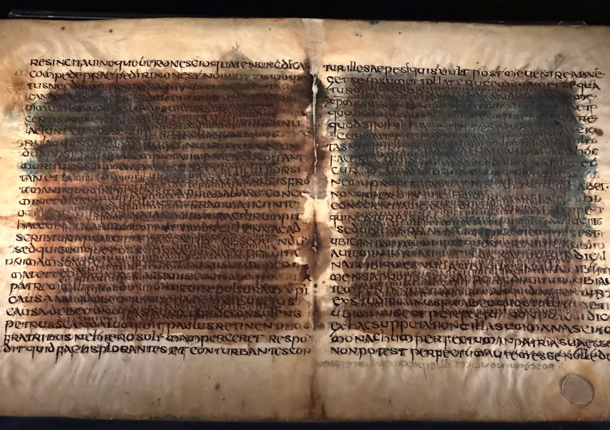

Unit 6 · Slavery in ancient Rome · Lesson 17
Feedback in action: rewriting the timed response
Your timed response comes back with one strength and one next step. Today you hear what the whole class did well, learn how a paragraph moves from describing to arguing, and rewrite your own.
Year 11 Ancient History · Present with → or space · Read on a phone with R

Review · books closed · 4 minutes · press K, click 3, then Start
Five questions on earlier sources
- What does Strabo 14.5.2 say Delos ‘could’ do, and is the figure a count? That it “could both admit and send away ten thousand slaves on the same day”: what the market could handle, a round number and a claim, not a count of daily sales. As the cause of the trade, Strabo gives the Romans, who, rich after the destruction of Carthage and Corinth, “used many slaves”.
- What does Columella 1.6.3 say there ‘should be’ for those in chains, and is it a record or a plan? “an underground prison, as wholesome as possible”, lit by narrow windows too high to reach. It is Columella’s plan (“there should be”), not proof that every farm had one.
- In Epistle 47.1, what does Seneca say Fortune has over “slaves and free men alike”, and is the letter simply private? “Fortune has equal rights over slaves and free men alike”, so he calls enslaved people “fellow-slaves”. It is a letter of advice from Seneca, himself an owner, to his friend Lucilius, but not simply private: he expected later readers (“I shall find favour among later generations”, Letter 21.5).
- What does the lex Aelia Sentia do (Gaius 1.18), and is it a ban on freeing? It sets an age: unless he is thirty years old, an enslaved person “cannot on manumission become a citizen of Rome”, unless freed by the form of vindicta, “preceded by proof of adequate motive before the council”. It regulates freeing; it does not ban it. (A law of 4 CE, as Gaius reports it about 160 CE.)
- How does Spartacus die in Plutarch (Crassus 11.7) and in Appian (Civil Wars 1.120)? Plutarch: after his companions fled, he “stood alone, surrounded by a multitude of foes, and was still defending himself when he was cut down”. Appian: wounded in the thigh by a spear, he “sank upon his knee”, holding his shield in front of him, until he and “the great mass of those with him” were surrounded and slain; “The body of Spartacus was not found.” Neither writer was there: Plutarch wrote about 170–190 years after the revolt, Appian about two centuries.
Mark your own answers in a different colour. Which question did you find hardest?
Review · writing item · 2 minutes · vote on “3, 2, 1, show”
Which conclusion resolves, A or B?
Both are invented, written for this lesson. The question: To what extent is Cato 59.1 reliable evidence for how enslaved farm workers were clothed? The thesis: “Cato 59.1 is reliable only in part for how enslaved farm workers were clothed.”
- AIn conclusion, this response has looked at Cato 59.1, an owner’s rule for a farm. It has described the clothing Cato sets for the hands: a tunic, a blanket and wooden shoes. It has also explained that Cato wrote a handbook for running a farm.
- BUltimately, Cato 59.1 is reliable only in part. It shows what one owner planned to issue, because it is his own rule, but not what the hands received, because a plan is not a record. It therefore tells us more about owners’ expectations than about the lives of the people who wore the clothes.
B refines the thesis in the same degree (only in part), draws the reasons together (a rule, not a record), says why it matters (owners’ expectations, not the lives of the people who wore the clothes), adds no new evidence and ends on a judgement. A only summarises what the response did and what the source says: it names no degree and ends on a description.
Learning intentions and success criteria · 1 minute
Today’s goals
- act on feedback to improve a timed response
- revise a paragraph so that it argues rather than describes
- explain my next step and the checklist point it belongs to
- rewrite a paragraph so its Judge, Evaluate and Resolve argue
- explain the change I made and why it is stronger
Syllabus outcomes: AH-11-03 explains the role and significance of forces, features, events, individuals and groups in shaping the past · AH-11-04 accounts for the different perspectives of individuals and groups in their historical context · AH-11-07 communicates historical understanding, applying historical knowledge, terms and concepts. Life Skills: AH-LS-07 identifies different perspectives of the past · AH-LS-11 communicates information about the past using historical terms and concepts.
Note-making · the routine for the whole course
How to structure your notes
questions and key terms, written after
short phrases, arrows (→ leads to), abbreviations (c. = about; ↔ = compared with)
- 1A new pageA cue column about a quarter of the page wide; title and date at the top; room for a summary at the bottom.
- 2Three kinds of writing todayNotes on the six next steps; your rewrite, on the rewrite sheet; your two goals on the exit ticket.
- 3One row per next stepThe checklist point, the problem and the fix. Star the one that is yours.
- 4Write the cue questions afterwardsUse the checklist’s words. To revise, cover your notes and answer the cues.
- 5Finish with a three-sentence summaryIf time, or at home: what feedback names, how a paragraph argues, and your next goal.
Key vocabulary · the words of feedback and revision
Words for acting on feedback
| From the unit list | Meaning |
|---|---|
| Feedback in action | Rewriting straight away the part named in your next step. |
| Criteria | The standards a judgement uses: author’s position, purpose, date, typicality. |
| Degree | How far something is true: entirely, largely, partly, only to a limited extent. |
| Resolving conclusion | A conclusion that refines the thesis, adds no new evidence and ends on a judgement. |
| Hedge | A word that matches certainty to the evidence: perhaps, probably, on one estimate. |
| Verbs (NESA) | Meaning · what the answer does |
|---|---|
| Describe | ‘Provide characteristics and features.’ A describing paragraph says what a source says or what happened. |
| Evaluate | ‘Make a judgement based on criteria. Determine the value of.’ Department advice: name the criteria and judge against them. |
| Added today | Meaning |
| Next step | The one change your feedback asks for, coded to a point on the class checklist. |
| Copy conversation | A short talk about your sentences: what each one does, and one change to make. |
1 · Whole-class feedback · 1½ minutes · the most common strengths
What worked in the timed responses
Strong theses take a side with a degree word: largely, partly, decisive, only to a limited extent.
Looks like“Crassus’s part was decisive in restoring discipline but only partial in the final defeat, because his soldiers, his wall and Pompey’s army all contributed.”Strong quotations are a few words long, built into a sentence with a signal phrase, the writer’s date and a reference.
Looks like“Plutarch, writing about 170–190 years after the revolt, says Crassus ‘determined to build a wall across the isthmus’ (Crassus 10.4).”Strong responses use the present tense for what a writer says, and the past for what happened.
Looks like“Appian says that Crassus decimated the consuls’ two legions, which suggests that he treated discipline as the army’s first problem.”Every example here and on the next two slides is invented, written for this lesson, on a different question from yours: Assess the importance of Crassus in ending the revolt of Spartacus. None is anyone’s real writing.
One strength and one next step, each coded to a point (the code is its name). Your next step names the paragraph you rewrite today.
- Introduction: sets the context (who, when, where) in expanded noun groups, and limits any key term
- Thesis: answers the question with a degree and previews the arguments in the order the paragraphs make them; no sentence announcing the essay
- Body paragraphs: each opens with a topic sentence linked to the thesis, runs Judge → Evidence → Analyse → Evaluate → Resolve (our Unit 4 body-paragraph checklist) and holds the thesis’s degree to its Resolve
- Evidence: precise, from more than one kind of source, embedded with a signal phrase and a reference; every writer and historian attributed (who, when, for whom), every number or claim given to the person who makes it
- Language: modality matches the evidence, with degree words saying how far and hedges how sure, neither stacked; present tense for what writers and historians do; links (this, such, however, therefore) join each sentence and paragraph to the last
- Conclusion: refines the thesis in the same degree, draws the reasons together, says why the judgement matters, adds no new evidence and ends on a decisive judgement
1 · Whole-class feedback · 2½ minutes · the most common next steps · before → after
Next steps 1–3: the introduction, the thesis, the body paragraphs
Every Before is an invented sentence, written for this lesson, on a different question from yours: Assess the importance of Crassus in ending the revolt of Spartacus.
BeforeCrassus was a Roman. There was a big revolt. Crassus was important.
AfterAfter a string of Roman defeats in Italy, in late 72 BCE Licinius Crassus, a noble of great wealth, took command against Spartacus with six new legions; ‘importance’ here means what he did to end the revolt, not his wealth or later career.
Why it works: who, when and where (a noble of great wealth, in late 72 BCE, in Italy), then one limit on the key word, importance, before the thesis.
BeforeThis essay will discuss how important Crassus was in ending the revolt, which was very important.
AfterCrassus was largely responsible for ending the revolt: he restored discipline in a beaten army, walled the rebels in near the sea and beat them in a last battle, although Pompey later claimed to have ‘extirpated the war’.
Why it works: NESA’s assess asks for ‘a judgement of value, quality, outcomes, results or size’: how much? The after gives a degree and previews three reasons, in order, and announces nothing.
BeforeCrassus came and decimated his soldiers. Then he built a wall. Then Spartacus broke out. Then the battle happened.
AfterRestoring discipline was the first reason Crassus was largely responsible for ending the revolt. Appian says that, having decimated two beaten legions, Crassus ‘demonstrated to them that he was more dangerous to them than the enemy’ (1.118), which suggests that fear of him, as well as of Spartacus, drove them to fight. … On balance, discipline came first, and his later successes probably depended on it.
Why it works: it opens with a judgement linked to the thesis, says what the evidence suggests, not what happened next, and, after the Evaluate (…), resolves in the thesis’s degree.
1 · Whole-class feedback · 2½ minutes · the most common next steps · before → after
Next steps 4–6: evidence, language, the conclusion
Every Before is an invented sentence, written for this lesson, on the same different question: the importance of Crassus in ending the revolt of Spartacus.
BeforeCrassus killed 6000 of the rebels in a morning.
AfterAppian, writing about two centuries after the revolt, says that Crassus ‘slew about 6000 of [Spartacus’s] men in the morning and as many more towards evening’ (1.119); the figures are Appian’s round numbers, not a count.
Why it works: a signal phrase, the writer’s date, a reference, and the number given to the person who makes it.
BeforePlutarch proves that Crassus was a great general, so the war was all his doing.
AfterHowever, Plutarch’s Life is about Crassus, so it may stress his part: Plutarch says Crassus ‘had shown most excellent generalship’ (11.7), but he also reports Pompey’s claim to have ‘extirpated the war’, which suggests that the credit was contested.
Why it works: proves and all his doing claim more than one source can carry; may and suggests fit the evidence, and However links the sentence to the one before.
BeforeIn conclusion, this essay has looked at the discipline, the wall and the last battle, and Crassus was important in all of them.
AfterUltimately, Crassus mattered less for winning any single battle than for making a beaten army fit to fight one: his discipline and his siege works probably prepared the victory, even though Pompey could still claim to have ‘extirpated the war’. Whose victory it was depends on whether we ask who struck the last blow or who made it possible.
Why it works: it sharpens the thesis (less … than), draws the reasons together, says why the judgement matters, and ends on it, not on what the essay did.
2 · Writing focus · 7 minutes · I do → We do → apply · I do: 3 minutes
Writing focus: revise a paragraph from describing to arguing
A question that is not yours: To what extent do Plutarch and Appian give a reliable account of how Spartacus died?
Three moves turn a paragraph that describes into one that argues: open with a Judge that gives a degree · give the Evaluate a criterion · make the Resolve keep the Judge’s degree.
Before · invented, written for this lesson · it describesSpartacus fought his last battle against Crassus. Plutarch says that after his companions had fled, Spartacus ‘stood alone, surrounded by a multitude of foes’ and was ‘cut down’ while still defending himself (Crassus 11.7). Appian says that he was wounded in the thigh by a spear and ‘sank upon his knee’, holding his shield, until he was surrounded and slain (Civil Wars 1.120). Appian also says that ‘The body of Spartacus was not found’. Both writers wrote a long time after the revolt, so they might be wrong. So the accounts are not reliable at all.
Plutarch and Appian give a reliable account of how Spartacus died only in part: they agree that he died fighting in the last battle, but not on how. Plutarch says that, once his companions had fled, Spartacus ‘stood alone, surrounded by a multitude of foes’ until he was ‘cut down’ (Crassus 11.7), whereas Appian has him wounded in the thigh, on his knee behind his shield, until he and ‘the great mass of those with him’ were surrounded and slain (Civil Wars 1.120). Both pictures show a man fighting on until he was overwhelmed, which suggests that the two writers agree on the kind of death, if not on who was beside him. Judged by date and position, neither is strong evidence for the detail: Plutarch wrote about 170–190 years and Appian about two centuries after the revolt, and Bradley concedes that the sources for the slave wars are ‘relatively late and unconcerned with the servile perspective of events for its own sake’ (1989, p. xii); and Appian adds that ‘The body of Spartacus was not found’, so the manner of his death rests on the writers’ word alone. On balance, then, the accounts are probably reliable that Spartacus died in battle, but only partly reliable about how.
Judge (fix 1): a degree, not a story
Evidence: both writers, with references
Analyse: what the evidence suggests
Evaluate (fix 2): criteria, date and position
Resolve (fix 3): the Judge’s degree, kept
2 · Writing focus · We do: 4 minutes · then apply, near the end of your rewrite
Writing focus: now you revise one
Another question that is not yours: To what extent does Varro 1.17.1 show how Roman owners saw enslaved people?
Before · invented, written for this lesson · it describesVarro says that farming is done with men and with tools. He divides the tools into three groups: the articulate are enslaved people, the inarticulate are cattle and the mute are vehicles. Of course, Varro might be wrong. So all Roman owners saw enslaved people as things.
With a partner, say a revision aloud with the three moves, then write it: Judge with a degree · Evaluate with a criterion · Resolve in the same degree.
Cold call: which move changed most between the Before and the revision, and why?
The Evaluate: the Before said “Varro might be wrong”, which names no standard; the revision judges by typicality and says what the extract does not tell us. The Judge and the Resolve changed too: both now say only to a limited extent, where the Before said all. The revision also fixes whose scheme it is: Scrofa, a speaker in Varro’s dialogue, reports what ‘others’ do; the Before wrongly made it Varro’s own.
Varro 1.17.1 shows how Roman owners saw enslaved people only to a limited extent: it shows that some owners classed them as tools, not that all did. In Varro’s dialogue a speaker, Scrofa, reports that ‘others’ divide the means of farming into the articulate, the inarticulate and the mute, with ‘the articulate comprising the slaves’. This suggests that, in this scheme, enslaved people are counted among a farm’s instruments, as cattle and vehicles are. Judged by typicality, the scheme is weak evidence of what owners generally thought: Scrofa does not say who the ‘others’ are or how many held the view. On balance, then, Varro 1.17.1 shows only to a limited extent how Roman owners saw enslaved people: how some classed them, not how owners in general did.
Judge: a degree, not “Varro says” · Evidence: the scheme is ‘others’’, reported by Scrofa · Evaluate: the criterion is typicality · Resolve: the same degree.
When 5 minutes of your rewrite are left, check your paragraph’s three moves:
Your Writing toolkit (booklet pages 3–4): the modality scale and degree words.
3 · Feedback in action · 28 minutes · click 20, then Start (press K first only if the timer is closed)
Rewrite the paragraph your next step names
- Introduction: sets the context (who, when, where) in expanded noun groups, and limits any key term
- Thesis: answers the question with a degree and previews the arguments in the order the paragraphs make them; no sentence announcing the essay
- Body paragraphs: each opens with a topic sentence linked to the thesis, runs Judge → Evidence → Analyse → Evaluate → Resolve (our Unit 4 body-paragraph checklist) and holds the thesis’s degree to its Resolve
- Evidence: precise, from more than one kind of source, embedded with a signal phrase and a reference; every writer and historian attributed (who, when, for whom), every number or claim given to the person who makes it
- Language: modality matches the evidence, with degree words saying how far and hedges how sure, neither stacked; present tense for what writers and historians do; links (this, such, however, therefore) join each sentence and paragraph to the last
- Conclusion: refines the thesis in the same degree, draws the reasons together, says why the judgement matters, adds no new evidence and ends on a decisive judgement
- Read your strength and next step; find its point on the checklist.
- Underline the paragraph (or part) your next step names.
- Rewrite it in the after column, using the before → after for your point and the three moves: Judge, Evaluate, Resolve.
- When 5 minutes are left: check the three moves (3 minutes). If your step is the Introduction, Thesis or Conclusion, check that point instead.
- What I changed and why: thinking, evidence or language? Not a neater copy.
Copy conversation, if your group is called: read one changed sentence aloud, say what it does now in the checklist’s words, and agree one more change.
Next step as a question on your sheet. Check: degree? criteria? a Resolve that matches?
Engage a historian’s interpretation (Scheidel, Bradley or another) in your conclusion; say how it sharpens your judgement. See Practice and review.
Read-alouds: what does each rewrite do now that it didn’t before?
The checklist point and the change: for example “it now opens with a Judge that gives a degree” or “its Evaluate now names a criterion”. Same moves as before? Then it is only a neater copy.
Check · 5 minutes · a new question · click 5, then Start (press K first only if the timer is closed) · on a fresh page
Plan a new question in five minutes
Assess how far the conditions of enslaved people in the mines were worse than those on farms, c. 200 BCE – 200 CE.
What does this question ask you to do? Check your deconstruction.
- Verb
- assess: NESA, Glossary of key words: ‘Make a judgement of value, quality, outcomes, results or size.’ With how far, it asks for a judgement of degree, not yes or no
- Topic
- how far conditions in the mines were worse than conditions on farms
- Limits
- two settings to compare (mines, farms) · conditions · c. 200 BCE – 200 CE
- Do
- a plan, not a response: a judgement with a degree · three points that each argue something · evidence for each, with who made it and when · one counter-view
Plan on paper. In the HSC, reading time is for thinking only. NESA’s 2027 HSC student guide says: “You must not write on or mark your exam in any way or use any equipment (including highlighters).”
| Step | Your plan |
|---|---|
| Deconstruct 1 minute · verb, topic, limits, do | |
| Judgement 1 minute · a degree | |
| Three points 2 minutes with the evidence · who, when | |
| One counter-view 1 minute · the strongest case against you |
Plan template with a box for each step. Judgement frame: “The conditions in the mines were worse than on farms to a … extent, because …” Choose your own degree word. Your Writing toolkit (booklet pages 3–4): the modality scale and degree words.
Check · exit ticket · 5 minutes · compare your plans, then write two goals
Two goals for your next extended response
Put today’s plan beside your Lesson 16 plan. What is stronger now? What is still missing?
“Goal 1 (checklist point …): next time I will …, for example by … .”
“Goal 2 (checklist point …): next time I will …, for example by … .”
names a checklist point by its label; says exactly what you will do differently (a move or a sentence feature, such as “name a criterion in every Evaluate”, not “try harder”); and is something you could tick, or not, in your next extended response. One goal can come from today’s next step, the other from your plan comparison or from Your Writing toolkit (booklet pages 3–4).
Then check yourself against today’s three “I can” statements, and hand in your rewrite sheet with your exit ticket stapled to it.
Finish your notes If time · or at home
Summary: three sentences
- What do the codes on your feedback tell you?
- How does a paragraph that argues differ from one that describes?
- What is your next goal, and how will you know you have met it?
The codes name one strength and one next step as points on our class checklist, so I know which paragraph to rewrite and which move to fix. A paragraph argues when its Judge gives a degree, its Evaluate names a criterion such as date or position, and its Resolve keeps that degree; a paragraph that only says what the sources say, or what happened, describes. My next goal is to name a criterion in every Evaluate, and I will know I have met it when I can point to the criterion’s word in each of my paragraphs.
Practice and review · 1 of 4 · true, false, justify
True or false? Justify your answer
- 1A paragraph that opens with “Spartacus fought his last battle against Crassus” opens with a Judge. False — it narrates. A Judge answers the question in its first sentence, with a degree.
- 2Appian says that the body of Spartacus was found and buried. False — “The body of Spartacus was not found” (Civil Wars 1.120).
- 3A Resolve should keep the degree that the Judge gave. True — our checklist holds the thesis’s degree to the Resolve; a Resolve may sharpen it or say what it rests on, but not change it.
- 4Seneca wrote Epistle 47 as a private letter, so he never expected anyone else to read his letters. False — it is a letter of advice to his friend Lucilius, and in Letter 21.5 Seneca writes “I shall find favour among later generations”: he expected later readers.
- 5The lex Aelia Sentia banned the freeing of enslaved people under thirty. False — it set an age: unless thirty, an enslaved person “cannot on manumission become a citizen of Rome”, unless freed by the form of vindicta after proof of adequate motive before the council (Gaius 1.18). It regulates freeing; it does not ban it.
- 6“Judged by date, Plutarch is weak evidence for the detail of Spartacus’s last battle” names a criterion. True — date is one of the four criteria (position, purpose, date, typicality); Plutarch wrote about 170–190 years after the revolt.
Practice and review · 2 of 4 · from describing to arguing
Tell three openings apart, then keep the degree
The question and the three sentences are invented, written for this lesson: To what extent was Seneca’s Epistle 47 a plea for kinder treatment of enslaved people?
- “In Epistle 47 Seneca writes to his friend Lucilius about a dinner, a rod and a saying.”
- “This paragraph will discuss Epistle 47.”
- “Epistle 47 is largely a plea for kinder treatment, although it speaks to owners and says little about what enslaved people themselves wanted.”
Sentence 3 judges: it gives a degree (largely) and a limit. Sentence 1 describes: it says what is in the letter. Sentence 2 announces: it says what the paragraph will do, not what it finds.
An invented student’s Judge: “Cato 59.1 is reliable only in part for how enslaved farm workers were clothed.”
The same invented student’s Resolve: “So Cato 59.1 proves exactly how every farm worker was clothed.” Rewrite the Resolve so that it keeps the Judge’s degree.
On balance, then, Cato 59.1 is reliable only in part: it shows what one owner planned to issue to his hands, but not what each of them received.
Practice and review · 3 of 4 · extension · rewrite your conclusion
Engage an interpretation in your conclusion
In my model, the most probable range of outcomes is consonant with a cumulative total of between 1 and 1.5 million slaves in Italy at the peak of this labour regime, equivalent to some 15–25 per cent of the total population.
Walter Scheidel, “The Roman slave supply” (2011), p. 289, on his model of the numbers
The Roman slave wars were not revolutionary mass movements in any sense, but to a large extent historical accidents precipitated by a combination of circumstances that never again reappeared in the long history of slavery in the Roman world.
K. R. Bradley, Slavery and Rebellion in the Roman World (1989), p. 126
Rewrite the conclusion of your timed response so that it engages the view of a historian from our unit: one of these two, or another whose view bears on your conclusion. Then add one sentence: does that view change the degree of your judgement, or only what it rests on?
- precise attribution in the present tense: “Scheidel argues …”, “Bradley argues …”, with the date, and the historian’s own hedges;
- the view set against your judgement, and weighed, not agreed with by default;
- a judgement that is refined, not abandoned, in the same degree or with the change in degree explained;
- why the judgement matters, and a decisive last sentence;
- no new evidence beyond the historian’s view itself.
Practice and review · 4 of 4 · cover your notes and answer from memory
Quick checks
- What do the codes on your feedback tell you? The point of our class checklist that your strength and your next step belong to, by its label; your next step names the paragraph (or part) you rewrite.
- How do you turn a paragraph that describes into one that argues? Open with a Judge that gives a degree; say what the evidence shows; name a criterion in the Evaluate; keep the degree in the Resolve.
- What are the four criteria for judging a source? The author’s position, purpose, date and typicality.
- What must a Resolve do? Keep the degree of the Judge, say what the evidence does and does not show, and add no new evidence.
- What happens in a Copy conversation? You read one changed sentence aloud, say what it does now in the checklist’s words, and agree one more change.
- What makes a rewrite more than a neater copy? A deliberate change in thinking or language (a Judge with a degree, a criterion, a Resolve that matches), named in “What I changed and why”.
Sources and credits
Where everything comes from
Review and revision examples: Strabo, Geography 14.5.2 (trans. H. L. Jones, Loeb, 1929); Columella, De Re Rustica 1.6.3 (trans. H. B. Ash, Loeb, 1941); Cato, De Agri Cultura 59.1 and Varro, De Re Rustica 1.17.1 (trans. W. D. Hooper and H. B. Ash, Loeb, 1934): all on LacusCurtius (public domain). Plutarch, Life of Crassus 10–11: trans. B. Perrin (Loeb, 1916, public domain), LacusCurtius. Appian, Civil Wars 1.118–120: trans. H. White (Loeb, 1913, public domain), LacusCurtius. Seneca, Epistles 47.1 and 21.5: trans. R. M. Gummere (Loeb, 1917, public domain), Wikisource (text CC BY-SA 4.0). Gaius, Institutes 1.18: trans. E. Poste, 4th edn, rev. E. A. Whittuck (Oxford, 1904, public domain), archive.org.
Modern historians, quoted briefly: K. R. Bradley, Slavery and Rebellion in the Roman World, 140 B.C.–70 B.C. (Indiana University Press, 1989), pp. xii, 126, 136; W. Scheidel, “The Roman slave supply”, in K. Bradley and P. Cartledge (eds), The Cambridge World History of Slavery, vol. 1 (Cambridge University Press, 2011), p. 289. NSW Education Standards Authority, Glossary of key words (definitions quoted word for word) and the 2027 HSC student guide, p. 19 (step 3, “Reading time”). NSW Department of Education, Writing in Secondary: the Writing conversations guide (Copy).
Every “before” and “after”, model and example on this page was written for this lesson; none is a student’s work.
Outcomes and content: NSW Education Standards Authority (NESA), Ancient History 11–12 Syllabus (2024). © NESA.
- The Verona palimpsest, the main manuscript of Gaius’s Institutes: opened leaves in the Biblioteca Capitolare, Verona (Gaius’s text, copied probably in the 5th century CE, lies erased under later writing) · Photo: Punteador · CC BY-SA 4.0 · source
_%E2%80%93_Gaius_palimpsest,_opened_leaves.jpg){kind=link}
The photograph was cropped and resized for the web and is shared under the licence shown. A palimpsest is decoration here: a picture of rewriting, not evidence for any question on this page.